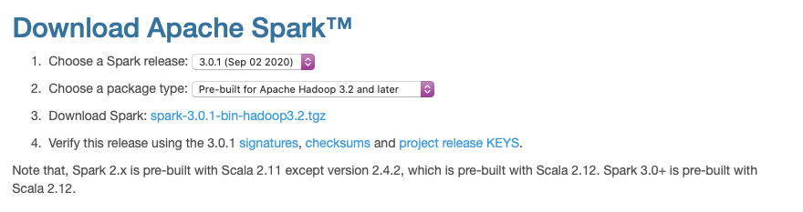
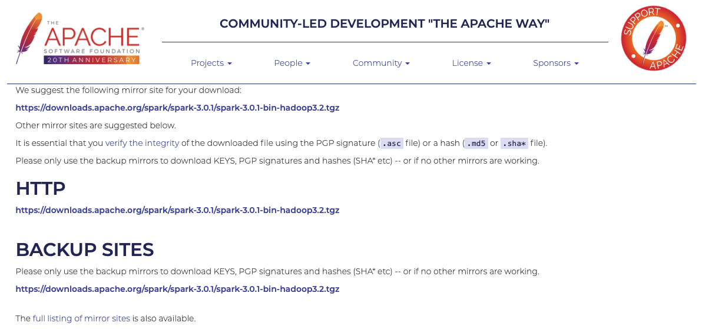
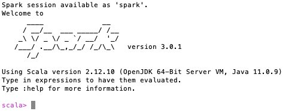
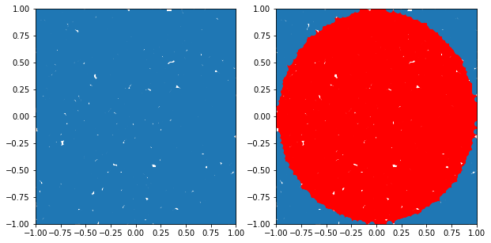

Mac OS에 스파크3 설치 및 pyspark 시작 #
설치 환경
OS : MacOS Catalina 10.15.7
Java : java 11.0.1
Python : Python 3.7.6
Spark : spark 3.0.1
STEP1. 스파크 버전 선택 후 다운로드 #
NT. Java 와 Python은 설치 돼 있다는 가정으로 진행한다.
스파크 다운로드 사이트 링크 : Downloads | Apache Spark
사이트에 접속하면 아래 화면이 나오게 된다.

원래는 Spark 2.4.7 을 선택해서 설치했었다.
하지만 로컬의 Java 버전이 11이었으므로, 그냥 이참에 Spark3.0을 시도해보기로 했다!
(참고) Spark3.0은 Java 11을 지원하고, Spark2.X는 Java 8을 지원한다.
우선 원하는 Spark 버전 선택하여 ‘Download Spark’ 를 클릭해주면 다음과 같은 화면으로 넘어간다.

mirror sites 중 한개를 선택해 다운로드 해주는데, 그냥 최상단 링크를 눌러 다운로드 해준다.
STEP2. 다운로드한 압축 파일을 home directory에 풀어준다. #
tar -zxvf spark-3.0.1-bin-hadoop3.2.tar
STEP3. ~/.bash_profile 환경변수 수정 #
어떤 directory에서도 spark notebook 열 수 있도록 환경변수 설정해준다.
## .bash_profile 있는지 확인
ls -a
## .bash_profile 파일 열기
nano .bash_profile
## 또는
vi .bash_profile
아래 환경변수 추가로 써준다.
## 버전 맞게 써주기
export SPARK_PATH=~/spark-3.0.1-bin-hadoop3.2
## PySpark Shell을 주피터 노트북에서 열 수 있도록 설정
export PYSPARK_DRIVER_PYTHON="jupyter"
export PYSPARK_DRIVER_PYTHON_OPTS="notebook"
## 파이썬 3를 사용한다면 아래 설정 추가해 주어야 에러가 나지 않음
export PYSPARK_PYTHON=python3
## sparknb는 명령어 마음대로 써준 것이므로, 원하는 이름으로 수정 가능
## local[2] 는 로컬 코어 2개를 사용한다는 뜻으로 본인 로컬 환경에 맞게 수정 가능
alias sparknb='$SPARK_PATH/bin/pyspark --master local[2]'
만약 nano .bash_profile 했었으면 ^x —> Y —> enter 로 저장하고 빠져나오기
vi .bash_profile 했었으면 :wq 입력 후 저장하고 빠져나오기
source .bash_profile
STEP4. 실행 확인 #
spark-shell 실행 #
## 터미널에서 spark-shell 입력하여 스파크 쉘 실행
spark-shell
터미널에 spark-shell 입력하면 아래와 같이 정상적으로 실행되면서 스칼라를 통해 코드를 작성할 수 있다.

주피터 노트북에서 실행 #
## 터미널에서 sparknb입력하여 주피터 노트북 실행
## 위에서 alias 다른 이름으로 설정했다면, 해당 이름으로 실행
sparknb
명령어 입력하면 주피터 노트북이 켜지고, pyspark를 작성할 수 있다.
STEP 5. 이제 모두 완료됐으니, 간단한 실습해보자! #
주피터 노트북에서 파이썬 코드 작성 #
# Reason why we have the getOrCreate code
# http://stackoverflow.com/questions/28999332/how-to-access-sparkcontext-in-pyspark-script
sc = SparkContext.getOrCreate()
import numpy as np
TOTAL = 1000000
dots = sc.parallelize([2.0 * np.random.random(2) - 1.0 for i in range(TOTAL)]).cache()
print("Number of random points:", dots.count())
stats = dots.stats()
print('Mean:', stats.mean())
print('stdev:', stats.stdev())
Number of random points: 1000000
Mean: [-0.00076914 0.00090079]
stdev: [0.57721218 0.57750566]
dots.collect()[:5] ## 형식 구경하기
[array([0.71638614, 0.34966844]),
array([0.85926697, 0.43265725]),
array([-0.12204166, -0.8161978 ]),
array([-0.96733469, -0.57462963]),
array([-0.13704113, -0.48361848])]
dots
ParallelCollectionRDD[0] at readRDDFromFile at PythonRDD.scala:262
%matplotlib inline
from operator import itemgetter
from matplotlib import pyplot as plt
plt.figure(figsize = (10, 5))
# Plot 1
plt.subplot(1, 2, 1)
plt.xlim((-1.0, 1.0))
plt.ylim((-1.0, 1.0))
sample = dots.sample(False, 0.01)
X = sample.map(itemgetter(0)).collect()
Y = sample.map(itemgetter(1)).collect()
plt.scatter(X, Y)
# Plot 2
plt.subplot(1, 2, 2)
plt.xlim((-1.0, 1.0))
plt.ylim((-1.0, 1.0))
inCircle = lambda v: np.linalg.norm(v) <= 1.0
dotsIn = sample.filter(inCircle).cache()
dotsOut = sample.filter(lambda v: not inCircle(v)).cache()
# inside circle
Xin = dotsIn.map(itemgetter(0)).collect()
Yin = dotsIn.map(itemgetter(1)).collect()
plt.scatter(Xin, Yin, color = 'r')
# outside circle
Xout = dotsOut.map(itemgetter(0)).collect()
Yout = dotsOut.map(itemgetter(1)).collect()
plt.scatter(Xout, Yout)
<matplotlib.collections.PathCollection at 0x7f88920d0a50>

Reference #
Install Spark on Mac (PySpark)